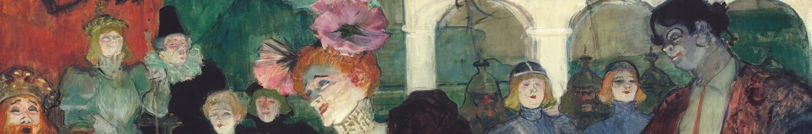

Party with R: How the community enabled us to write a book

It is like a party all the time; nobody has to worry about giving one or being invited; it is going on every day in the street and you can go down or be part of it from your window. - Eleanor Clark
Without the R community, Data Science in Education Using R would never have happened. Most evidently, we wouldn’t have met each other without the strong R presence on Twitter that sparked a conversation about data use in education. More importantly though, are the aspects of the R community that inspired that initial discussion and enabled us to complete a book for a broad and complex field.
In the first chapter of our book, we invite data practitioners in education to the party but the R community invited us to the party first. Like any successful party, certain elements had to exist for us to join in and end up having an amazing time.
The Invitation 📩
As someone who started following the R community on Twitter after it was already well established and popular, I never felt the apprehension about having to ask how to get involved or interact with others. First, there are so many avenues. The R community offers many ways to let you in, whether it be replying to Tweets, posting a question on community.rstudio.com, or sharing a blog post on R Weekly. Second, the R community welcomes users no matter their level. Whether it is a code snippet with a function you found cool, a blog post, or a personal side project, there are ways to engage that appeal to everybody. Members of the R community can interact how they want and as often as they want.
For us, it was exciting to meet on Twitter, talk about collaborating on an education data project, and then just get started on it. We felt welcome and encouraged to do so. Because people in the R community meet other users virtually and begin side projects all the time, we didn’t have to worry about whether something like this was possible: The invitation was already there.
An Open Door 🚪
In our first blog post, we described what it’s like to learn by seeing someone do the thing you want to learn. One of the best things about the R community is you constantly get to see this in action. The R community not only holds open principles but actually exhibits them whenever possible. Users post their code, projects, and drafts constantly. Just by scanning the #rstats hashtag, one can discover something new.
Because others were open, we knew that we wanted to be open as well. We wrote our book on GitHub, showing all the many changes it went through until its final completion. By having it freely available on a website, we hope that it opens the door to others who’d like to learn what we did and work on their own open project as well.
Food (for Thought) 🍕
The R community offers so many opportunities to get feedback, advice, and information from a wide variety of users. Early on in the book development, we had a lot of questions to nail down: who is the audience? “Data is” or “data are?” How do we describe “people who work in the education field and use data and want to get more effective at it?” Finding a common language was difficult, but we were able to do this by engaging others in the wider R community. We listened to the stories of many data scientists who work in education, then found common experiences we could describe in our writing.
As an example, we learned we weren’t the only ones challenged by learning a programming language while attending to full-time jobs and personal lives. Knowing this, we made sure to discuss these challenges in our book and offer various ways of engaging with the material based on the reader’s needs.
Socializing 💬
Throughout the process of writing DSIEUR, we asked the R community several times for other types of feedback and suggestions. We also ran into some technical issues, especially when it came to preparing our manuscript with {bookdown} to meet our publisher’s specifications, and were able to get ideas on how to resolve them. We know that the R community is a safe and encouraging place to ask questions, and this enabled us to write a stronger book.
The Next Day ☀️
The community participation throughout the DSIEUR process helped us define our goals and get feedback. Another wonderful aspect is that the R community engaged us back. Writing this RViews series is an example: Someone reached out to us and wanted us to reflect on what we discovered and share it with all of you. This type of engagement reminds us of what an inclusive and encouraging place the R community is and helps us come up with new ways of making sure others see the invitation as well.
Thank you for reading! 🎉 We’ll be back with the fourth post on “One Writer, Five Authors” in about two weeks. Until then, we’d love to know how else the R paRty has encouraged your work, both personally and professionally. You can reach us on Twitter: Emily ebovee09, Jesse kierisi, Joshua jrosenberg6432, Ryan RyanEs, and me ivelasq3.
Party with R: How the Community Enabled Us to Write a Bookhttps://t.co/NnGqM9Ux2X
— RStudio (@rstudio) August 4, 2020